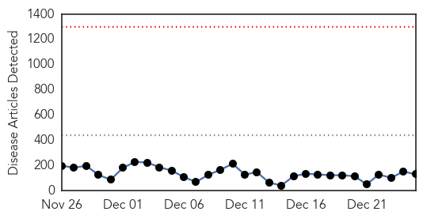
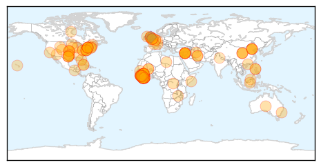
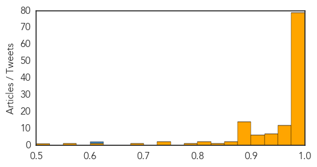
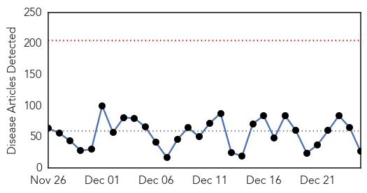
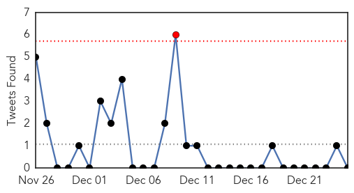
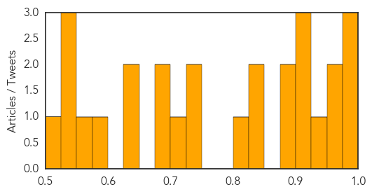

Ebola
30-Day Web Trend
0 alerts, 0 warnings

30-Day Twitter Trend
0 alerts, 0 warnings

Article Locations
Article Confidences
Top Articles:
- 1.000
- the edge of knowledge
- 1.000
- Channel 4's Alternative Christmas Message 2014: Ebola survivor William Pooley urges British public to join fight against deadly virus
- 1.000
- The Fears And The Real Lessons Learned
- 1.000
- WHO: Ebola Death Toll Reaches 7,500 While Almost 20,000 Infected
- 1.000
- Ebola crisis may last until end of 2015, says expert
- 1.000
- The-Pandora’s-Box-of-Ebola
- 1.000
- Ebola outbreak: Sierra Leone case count tops 9,000, Piot predicts it will continue through 2015
- 1.000
- Spotlight: China helps Africa fight Ebola - Xinhua
- 1.000
- 1.5 million infection projection
- 0.999
- China to test its Ebola vaccine on humans
- 0.999
- Lessons from the Ebola outbreak in West Africa
- 0.999
- Ebola could hang around for a while longer-scientists
- 0.999
- Atlanta lab technician may have been exposed to Ebola: CDC
- 0.999
- U.N. reports more than 7,000 Ebola deaths since March
- 0.999
- Touching stories of Ebola survivors
- 0.999
- China to Test Its New Ebola Vaccine on Humans in December 2014
- 0.999
- Spotlight: Ebola crisis dampens Africa's economic growth - Xinhua
- 0.999
- Sierra Leone orders lockdown over #Ebola
- 0.999
- China to test its Ebola vaccine on humans
- 0.998
- Passenger from Sierra Leone cleared of Ebola
- 0.998
- Kenya : Ebola crisis could last through 2015 as marks year since outbreak-expert-
- 0.998
- CDC monitoring Atlanta lab tech for possible Ebola exposure
- 0.998
- Lab error possible cause of latest Ebola exposure
- 0.998
- S.Leone nurses strike over Ebola hazard pay amid lockdown
- 0.998
- Backgrounder: China's all-out efforts in helping Africa contain Ebola outbreak - Xinhua
- 0.997
- Ready for Ebola, patients or not
- 0.997
- Ebola crisis dampens Africa’s economic growth
- 0.997
- No Christmas for Ebola-ravaged Sierra Leone
- 0.997
- China to test its Ebola vaccine on humans
- 0.996
- CDC worker monitored for possible Ebola exposure in lab error
- 0.996
- CDC worker monitored for possible Ebola exposure in lab error
- 0.996
- US lab technician monitored for Ebola after mix-up
- 0.996
- CDC Lab Worker May Have Been Exposed To Ebola, Under Surveillance For 21 Days
- 0.996
- Lab worker monitored in Ebola scare
- 0.996
- CDC worker monitored for possible Ebola exposure in lab error
- 0.995
- Government lab technician monitored after possible exposure to Ebola
- 0.995
- CDC monitoring tech for possible Ebola exposure
- 0.995
- China's all-out efforts in helping Africa contain Ebola outbreak - Headlines, features, photo and videos from ecns.cn
- 0.995
- Ebola sample mishandled by CDC, exposing lab worker to virus
- 0.995
- Sierra Leone declares 5-day Ebola lockdown in northern region - Xinhua
- 0.995
- Farsnews
- 0.995
- Three-day Ebola lockdown in Sierra Leone
- 0.995
- CDC Monitoring Tech For Possible Ebola Exposure
- 0.995
- Death toll in Ebola outbreak rises to 7,588 - WHO
- 0.994
- Funds for infectious disease research are dangerously low
- 0.994
- CDC monitoring tech for possible Ebola exposure
- 0.994
- Survivor Calls for Global Ebola Solution in Alternative Christmas Message
- 0.993
- Sierra Leone declares five-day Ebola lockdown in north
- 0.993
- UN Ebola response efforts at ‘full capacity' following warehouse fire
- 0.993
- Sierra Leone declares five-day Ebola lockdown in north
Showing top 50 articles...
Top Tweets:
- 0.814
- ebola escapes in CDC lab accident http://t.co/zo7KzbMf9j infectious disease
- 0.612
- Fed 100 ppl today in Freetown, Sierra Leone who have been infected and affected by Ebola. Thx WRESL for your support in making it happen
- 0.520
- RT: Exclusive: UK 'vulnerable' to future pandemics, says scientist who discovered Ebola virus http://t.co/m8pSpBlETf http://t.…
- 0.506
- Tous ensemble contre Ebola – @UNMEER spokesperson Fatoumata 21days EbolaResponse http://t.co/k3JwZeaK9R
Unknown
30-Day Web Trend
0 alerts, 0 warnings

30-Day Twitter Trend
0 alerts, 0 warnings

Article Locations

Article Confidences
Top Articles:
- 0.991
- Tenth Egyptian dies of H5N1 bird flu - Health Ministry
- 0.985
- Tenth Egyptian dies of H5N1 bird flu
- 0.981
- Flu season's 1st death reported in Hutchinson Co.
- 0.972
- Tenth Egyptian dies of H5N1 bird flu: Health Ministry
- 0.965
- Travelers to Guangdong cautioned over H5N6 flu
- 0.932
- Listeria at a glance
- 0.917
- Chicago Tribune
- 0.917
- Chicago Tribune
- 0.917
- Chicago Tribune
- 0.897
- Personal ‘hygiene can prevent hand, foot and mouth disease’
- 0.889
- Californians warned to avoid caramel apples after listeria outbreak
- 0.843
- Health officials recall caramel apples
- 0.838
- Unlicensed doctor with dirty needles infects 119 with HIV
- 0.822
- More than 160 villagers infected with HIV in northwest Cambodia - Xinhua
- 0.736
- Injection abuse raises concerns in China, Others news, Health News, AsiaOne YourHealth
- 0.727
- Newly Discovered 'Bourbon Virus' Kills Kansas Man
- 0.717
- It's peak flu season here in Michiana
- 0.686
- Over 160 found HIV positive in a Cambodia village
- 0.680
- Health officials monitoring botulism outbreak in Bristol Bay
- 0.650
- Ministry tackles unlawful doctors, National, Phnom Penh Post
- 0.636
- More than 160 infected in HIV outbreak in Cambodia
- 0.580
- Sudan orders senior UN officials to leave
- 0.563
- Sudan orders senior UN officials to leave
- 0.545
- Study shows heat waves may lead to increased hospitalization amongst seniors
- 0.538
- What the City of New York Did to "Typhoid Mary" Was Pretty Horrific
- 0.536
- Sudan orders senior UN officials to leave
- 0.505
- Firm recalls caramel apples amid listeria fears
Top Tweets:
-
No tweets found for Dec 25, 2014